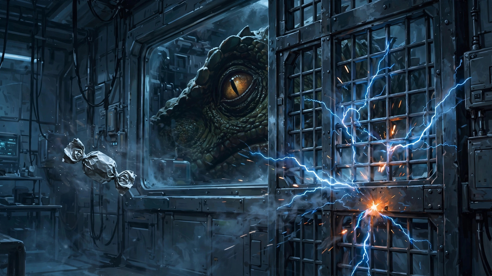

一块士力架引发的血案
科幻是我比较喜欢的电影类型，但这一类别也是烂片的重灾区，所以很容易踩雷。不过正因为我是科幻迷，所以对此类电影的宽容度很高。高到什么程度呢，原则上（豆瓣）6分以上就可以列入待看片单（如果是特别感兴趣的题材标准甚至可以降到5.5分）。所以，虽然这两年漫威和DC争相摆烂，我还是把他们家的电影照单全收地都看了。
侏罗纪世界这个系列虽然也拍了很多年了，有相当大的粉丝基础和影响力，但我对这个系列只能算路人粉。说实话，这次吸引我进影院的主要是寡姐。我是从吕克贝松的《超体》开始粉寡姐的，但对她后来更广为人知的角色“黑寡妇”（也是寡姐这一花名的由来）相反无感。倒不是寡姐长得有多好看，演技有多好，只能说她各方面长在我审美点上，看着她就舒服。你就当我是脑残粉吧。
前面废话了很多进影院看很多人认为的“这坨大的”的原因。看完《侏罗纪世界重生》后的感觉其实好于预期。不是偶像加成，是真心觉得并没有有些人说的那么差。
故事中规中矩（以下有部分剧透）。影片很不免俗地从某个“邪恶”实验室的事故开始，事故的起因非常狗血。一位中年油腻男科学家穿好全套无菌服，准备进入某个实验舱做啥操作。他在之前刚吃完一小包士力架巧克力，但随手一放包装纸，没有妥善处理。好死不死，正当他迈腿进入实验舱时，包装纸飘到了电动门的格栅内（这设计我也是真无语），引起短路。实验室出现严重技术故障，沉睡的实验对象，某种变异的恐龙苏醒过来。中年男科学家就这样因为一块士力架喜提盒饭，成为变异恐龙的第一个人类牺牲品。从此，变异恐龙和人类共存于地球。幸运的是，因为环境条件限制，变异恐龙集中生活在赤道的某个区域（下称“恐龙岛”），因此和人类基本相安无事。但有部分人类还在密切关注这些新 “邻居”。镜头来到纽约，一家大制药公司的代表（下称“邪恶代表”）找到寡姐，以高额回报为诱惑，邀请寡姐护送一名科学家去恐龙岛，帮助科学家执行一项秘密任务。任务听上去简单，实则九死一生，回报再高，很可能最后落个“有命挣无命花”的结果。但寡姐不是一般人，她曾经是一名特种兵，退役后执行过很多高难度的安保任务。所以经过一番考虑，寡姐同意接受挑战。寡姐敢于接受这么高难度的任务，艺高人胆大是一方面，更重要的是她不是一个人（这里没有骂人的意思）。她有个同样从军队退役的铁哥们邓肯，刚好目前带着一帮兄弟在赤道附近的海上混生活。寡姐自然想到去找邓肯求助。两人见面自然是一番亲热叙旧。鉴于高额回报和寡姐的人情，邓肯同意加入任务。就这样，主（song)角(si）团就草创成立，由邪恶代表带队，寡姐负责保护核心资产科学家，邓肯及其兄弟负责交通和打杂。一行人开往恐龙岛探险。途中还救起乱入的一家四口人（父亲俩女儿及大女儿男友），加入主角团。后面就是讲述主角团在恐龙岛如何被变异恐龙杀得丢盔弃甲、落荒而逃，这里就不赘述了。

故事听上去很烂是吧，其实看下来真不赖。首先，视觉效果这块没得说，毕竟好莱坞做恐龙视效的老底子还在。技术上只要舍得砸钱，是很难做到难看的。这也是这类爆米花电影始终能够大卖的主要原因。其次，故事虽然极其简单又老套（又是人类自己作死，实验室泄露搞出怪物这一套），但简单的故事更容易逻辑自洽，往往不会有太多硬伤。所以俗套有时也是优势。第三，本片的人物塑造不错，甚至有点令人惊喜。爆米花电影最常被人诟病的一点是重娱乐效果，轻人物塑造。以致很多此类影片中不管主角配角都如同纸片人，让人看过就忘。本片中寡姐自不必说，又美又飒，大杀四方。寡姐的铁哥们邓肯有情有义，关键时刻挺身而出不惜牺牲自己，令人动容。平民一家人中的大女儿男友，刚出场时给人以典型渣男印象：不修边幅、自私、麻木。但在女友遭遇危险时，毫不犹豫出手相救，令人刮目相看。还有反派邪恶代表，居然是位熟面孔。他在《国土安全》中后期饰演一位重要角色彼特奎恩。奎恩在该剧中是一位个性张扬但能力极强的特工，是妥妥的正面角色。不知侏罗纪为啥安排这么高大帅气威猛的男演员演这么个猥琐的反派，大材小用了。最后，有点意外的是，这样的爆米花电影也有价值升华（俗称“上价值”）的桥段。影片中科学家有两次劝说寡姐放弃高额回报，将获得的成果公之于世，造福全人类（"for all of us. not some of us"）。寡姐最后从善如流。我不是一个容易感动的人，但看到这里还是感觉有一点点温暖的。
另外，提下一个小惊喜。影片沿用了侏罗纪系列的主题音乐，我很喜欢，虽然只短暂地出现了两段。
不知士力架是不是给影片投了资或是投放了广告，整个故事的起因居然是一张士力架的包装纸。我没看过无极，借这个有年头的梗来做标题有点调侃意味，但没有批评的意思。作为一部商业片，《侏罗纪世界重生》是成功的，从票房和个人感受来说都是如此。豆瓣评分嘛，见仁见智了。